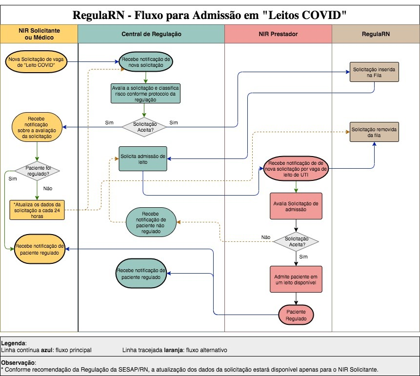

Sobre o RegulaRN
O RegulaRN é um sistema desenvolvido para gerenciar a ocupação e disponibilidade de leitos médicos na rede de saúde do estado do Rio Grande do Norte.
O RegulaRN é um sistema desenvolvido para gerenciar a ocupação e disponibilidade de leitos médicos na rede de saúde do estado do Rio Grande do Norte.
O Sistema RegulaRN está acessível através do endereço https://regulacao.saude.rn.gov.br/.
Tendo uma conta Sabiá e já ter realizado o autocadastro como Integrante NIR, basta acessar o RegulaRN através do endereço https://regulacao.saude.rn.gov.br/.
Veja o passo-a-passo na apresentação abaixo
Com o intuito de facilitar o entendimento do fluxo de interações entre os agentes que compõe o RegulaRN, foi desenvolvido um fluxo esquemático para a admissão de leitos COVID. O diagrama a seguir ilustra as relações informadas.
Para gerenciar solicitações de transferências de pacientes o usuário deverá acessar o vínculo de regulador e selecionar a opção "Solicitações Recebidas". Nessa opção o usuário poderá visualizar a fila de solicitações de leitos até o momento. A tela apresenta o nome da unidade de saúde, data da solicitação, a situação da solicitação, o quadro clínico do paciente e uma opção para avaliar.
Na aba "Abrir Quadro" o usuário poderá consultar:
Ao selecionar a opção "Avaliar", o usuário poderá avaliar os dados do paciente e dar o seu parecer acerca da solicitação: Aceitar ou Recusar. Em casos de solicitações recusadas, o regulador deverá informar uma justificativa. Por fim, selecionar o botão "Avaliar Solicitação".
Para encaminhar um paciente com a solicitação aceita para uma unidade de referência da COVID-19, o usuário regulador deverá selecionar a opção "Fila COVID-19" na tela inicial. A tela seguinte apresentará a fila de leitos covid, nela são descritas:
Selecionando o botão "Abrir Quadro" o usuário poderá avaliar as informações do quadro clínico do paciente (dados pessoais, evolução clínica, informações do quadro COVID e outras informações). Selecionando o botão "Indicar prestador" o regulador indicará a unidade de saúde ao qual o paciente será encaminhado. Ao selecionar a unidade, estando disponível o nome da unidade e quantidade disponível de leitos, o regulador confirmará a ação clicando no botão "Encaminhar Solicitação para o Prestador".
Suporte técnico do sistema:
Dúvidas sobre o processo de regulação